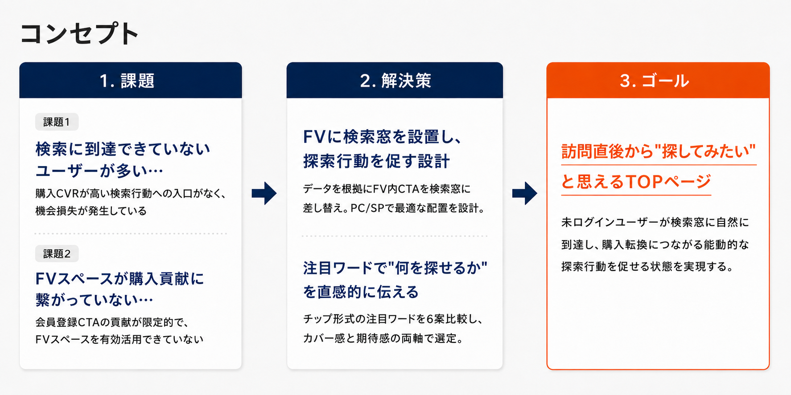
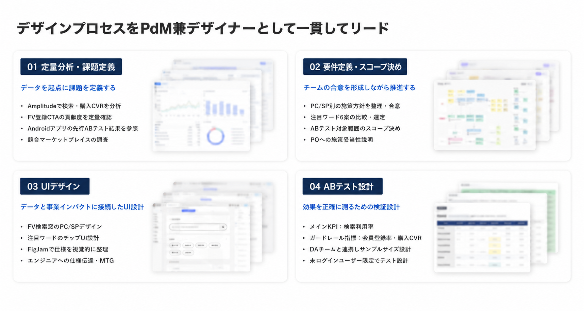
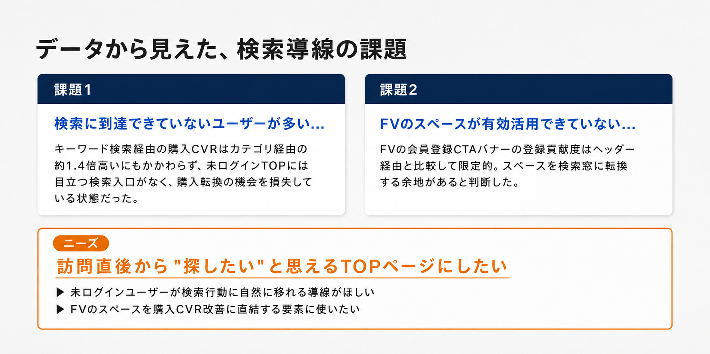
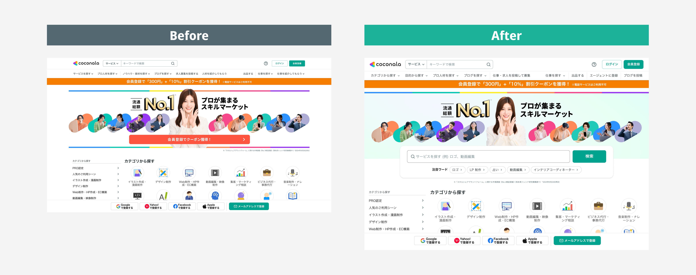
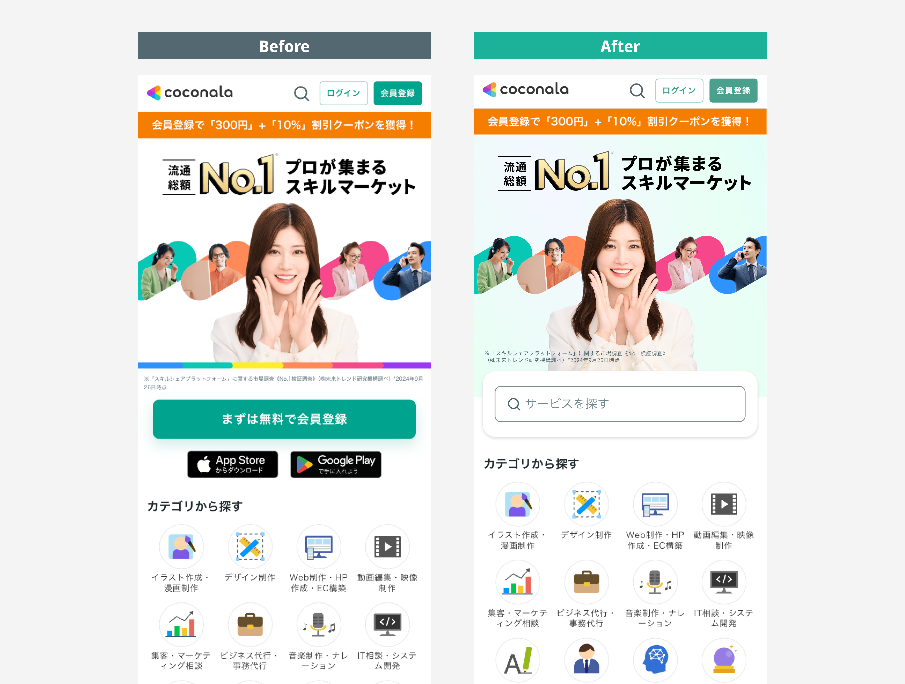

Web TOP Search Entry Improvement
未ログインTOP 検索導線強化PJ

はじめに
Web未ログインTOPにおいて、購入転換につながりやすいキーワード検索への導線を強化するプロジェクト。Androidアプリでの検索窓追加ABテストが好結果を示しており、Webへの展開でも購入転換を最大化できるという仮説があった。
PdM兼デザイナーとして、データによる課題定義から要件定義・スコープ決め・UI設計・ABテスト設計・エンジニアへの仕様伝達まで一貫して担当。「なぜこのUIにするのか」をデータと事業インパクトに接続しながら、チームの合意を形成しつつ推進した。
目次
- 01プロジェクトの概要
- 02コンセプト設計の概要
- 03コア課題の解決に向けたUI設計
- 04ABテスト設計
- 05終わりに
プロジェクトの概要
キーワード検索経由の購入CVRがカテゴリ経由の約1.4倍高いにもかかわらず、未ログインTOPには目立つ検索入口がなかった。Androidアプリで実施した検索窓追加ABテストが良好な結果を示しており、Webへの展開で購入転換を最大化できるという仮説を立てた。
現状FVは会員登録導線がメインだったが、全体の会員登録の母数を見ると効果は限定的な状態だった。これを根拠に、FVの会員登録CTAを検索窓に差し替える方針を決定。
📍 コンセプト
未ログインユーザーが訪問直後に「探してみたい」と思えるTOPページ。検索窓をただ置くのではなく、何を探せるか・どんなキーワードで探せばよいかを直感的に理解できる状態を目指した。

▶ プロトタイプ
🧑💻 デザインプロセスをPdM兼デザイナーとして一貫してリード
施策の妥当性整理からUI設計・エンジニアへの仕様伝達・ABテスト設計まで一貫して担当。特に意識したのは、UI変更の理由を感覚ではなくデータと事業インパクトに接続し、PO・エンジニア・DAチームと合意を形成しながら推進すること。

コンセプト設計の概要
1. 定量データから検索導線の改善余地を整理
キーワード検索経由の購入CVRはカテゴリ経由の検索より約1.4倍高い。しかし未ログインTOPには目立つ検索入口がなく、検索行動が購入転換に直結しやすいにもかかわらず、その入口に誘導できていない状態だった。未ログTOPで検索導線を強化することで、検索の利用率を上げることで購入数増やす狙いで施策を進めた。

2. 元々は会員登録を訴求していたので、そこの効果を測定
TOPのFVにある会員登録CTAバナーの登録貢献度を確認したところ、PCではヘッダー経由と比較してバナー経由は限定的な状態だった。FVのスペースは会員登録には十分機能しておらず、より購入CVRへの貢献が高い検索窓に転換する余地があると判断。FV内の会員登録CTAを検索窓に差し替える方針を決定した。
一方でSPではヒーローやバナーがファーストビュー内でサービス理解を促す役割も担っていたため、SPではヒーロー訴求を維持しながら検索窓をヒーロー直下に追加する方針とした。会員登録機会の損失リスクはガードレール指標として継続監視することにした。
💻 PC
FVバナー経由の登録貢献はヘッダー経由と比較して限定的
→ 方針
FVのCTAを検索窓に差し替え
3. 競合調査から未ログTOPの検索訴求パターンを整理
他社マーケットプレイスのFVを確認したところ、多くが未ログイン状態でも検索窓や注目キーワードをFVに配置していた。パーソナライズが効きにくい未ログイン状態では「何を探せるか」をTOPで明示し、能動的な探索行動を促すことが有効だと判断した。
競合に共通するFVパターン
コア課題の解決に向けたUI設計
1. FVの会員登録CTAを検索窓に差し替え
FVでは、会員登録CTAバナーの登録貢献が限定的なことを確認済みだったため、そのスペースを検索窓に差し替えた。ブランディング訴求と既存の会員登録導線（ヘッダー）は維持したまま、購入CVRに直結する検索行動をFVから促せる状態に設計。


2. 注目ワードの設計意図
検索窓の下に注目ワードをチップ形式で配置。意図は単なる「人気キーワード提示」ではなく、ユーザーが「こんなことも頼めるんだ」という期待感を高めること。特に初訪問の未ログインユーザーが、サービスのカバー領域を直感的に把握できることを重視した。何を検索すればよいかわからないユーザーにも、タップするだけで探索を始められる導線を設計した。
❌ やらないこと
単なる人気キーワード提示
- 取引数・人気順で機械的に選定
- 特定カテゴリに偏りやすい
- 「何を頼めるか」が伝わらない
✅ めざすこと
期待感を高めるキーワード設計
- サービス全体のカバー感が伝わる
- 初訪問ユーザーが興味を持てる
- タップするだけで探索を始められる
3. 注目ワード6案の比較選定
ログイン済み・未ログイン別にTOP100キーワードを全件抽出。各ワードにCVR・GMV・取引数・成長率を紐付けたうえで、「何を最適化するか」という目的軸を変えた場合に選ばれるワードがどう変わるかを6アプローチで比較した。
| アプローチ | 最適化目標 | 選ばれるワード例 |
|---|---|---|
| ① カテゴリ代表型 ★採用 | サービス全体のカバー感を伝える | ロゴ / LP制作 / 加工 / 動画編集 / インテリアコーディネーター |
| ② 取引数重視型 | 需要実績・人気の高さ | イラスト / 加工 / ロゴ / 看板 / ブラシ |
| ③ 希少性×高CVR型 | 発見と購入転換率の両立 | インスタ / 立ち絵 / ショート動画 / 歌ってみたMV / 加工 著作 |
| ④ 検索数シンプル上位型 | 絶対的なボリューム・認知 | インテリアコーディネーター / VTuber / イラスト / 立ち絵 / 加工 |
| ⑤ GMV×CVR効率型 | 収益インパクトの最大化 | VTuber / ロゴ / イラスト / LP / 看板デザイン |
| ⑥ 急上昇型 | トレンドの先取り | AIデータ作成 / VR Chat / Vyond / 古物商 / 縫製 |
採用の根拠：目的は「初訪問の未ログインユーザーにサービス全体のカバー感を伝えること」。大カテゴリごとに代表ワードを1つ選ぶことで、特定ジャンルへの偏りを防ぎながら「自分が探しているものがある」という期待感を幅広く担保できると判断した。
ABテスト設計
1. メインKPIは購入CVRではなく検索利用率
今回の施策が直接介入できる範囲は「TOPから検索行動へ移るかどうか」。購入CVRは検索結果・サービス詳細・注文導線など下流ファネルの影響を受けるため、検索窓追加の効果だけを切り出して判断しづらい。そのため検索利用率をメインKPIに置き、会員登録率と購入CVRはガードレールとして監視する設計にした。
ABテスト設計はDAチームのサポートを受けながら整理。対象は未ログインユーザーのみとし、効果が確認できればログイン済みへの展開も検討できる状態に整えた。
2. エンジニアとの仕様合意
ABテストの実装にあたり、コンポーネントの使い方や出し分けロジックについてエンジニアと認識齟齬が生じやすい箇所を事前に特定。FigmaとFigJamで仕様を視覚的に整理した上で、疑問点はMTGやSlackでその都度解消しながら進めた。設計の意図が正確に実装に反映されるよう、デザイナーとPdMの両視点から仕様伝達をリードした。
終わりに
🎯 データを根拠に、チームを動かす
このプロジェクトで意識したのは、「検索窓を追加する」という施策を感覚で進めるのではなく、データから課題を定義し、意思決定の根拠をチーム全員が納得できる形で整理すること。FVの会員登録CTAを差し替えるという踏み込んだ判断も、登録貢献の定量確認があったからこそPOやエンジニアへの合意形成がスムーズに進んだ。
💬 ユーザーの感情を設計の軸に置く
注目ワードの選定では、数字だけで決めず「初訪問ユーザーが感じる期待感」という定性軸を合わせて評価したことで、6案の比較に意味が生まれた。データと定性の両軸で判断する視点が鍛えられた。
🧑💻 PdM兼デザイナーとして得た視点
UIを整えるだけではなく、なぜそのUIにするのかをデータ・事業インパクト・UX観点から組み立て、チームに伝え、合意を形成しながら推進する力を磨けたプロジェクトだった。エンジニアとの仕様連携を通じて、デザインの意図を正確に実装に落とし込むためのコミュニケーション設計の重要性も改めて実感した。6月に結果が出た際には、数値をもとにさらに考察を深めていきたい。